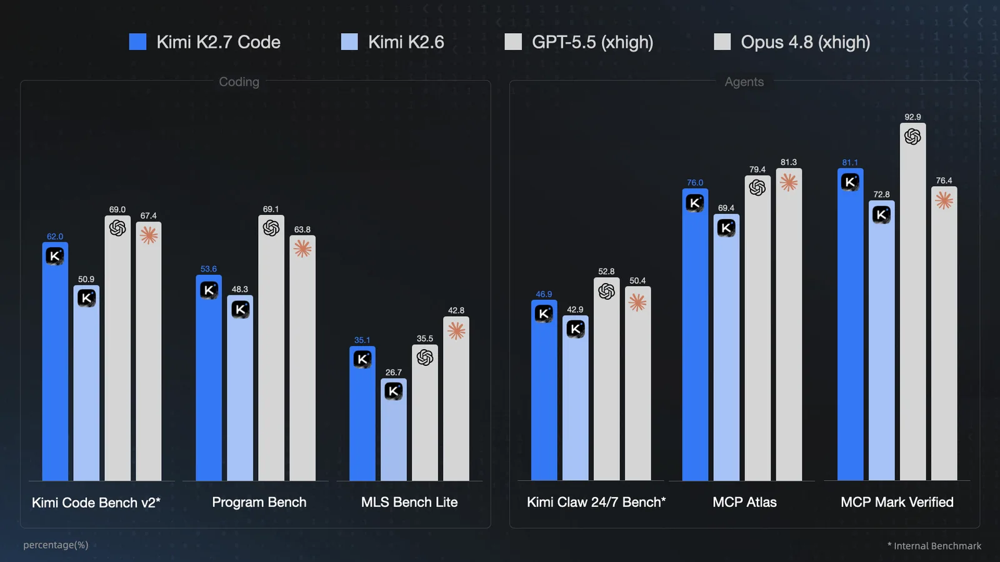

Moonshot ИИ — китайская лаборатория, известная прежде всего потребительским ИИ-ассистентом Kimi, — выпустила специализированную модель Kimi K2.7 Code. Это прямой преемник K2.6, оптимизированный под длительные задачи программирования и агентные рабочие процессы, где модель самостоятельно выполняет цепочки действий: пишет код, запускает тесты, взаимодействует с внешними инструментами.
Архитектурно K2.7 Code построена на принципе Mixture-of-Experts (MoE): общее число параметров составляет 1 трлн, однако при обработке каждого токена активируются лишь 32 млрд из 384 экспертов — конкретно восемь на токен. Такой подход позволяет держать вычислительные затраты на уровне значительно меньшей модели, сохраняя ёмкость большой. Контекстное окно — 256 тысяч токенов. Модель мультимодальна: помимо текста принимает изображения и видео через собственный энкодер MoonViT на 400 млн параметров. Архитектура идентична K2.5 и K2.6, что позволяет переиспользовать существующие конфигурации развёртывания без изменений.
| Модель | Входящие, $ / млн токенов | Исходящие, $ / млн токенов |
|---|---|---|
| Kimi K2.7 Code | $0,95 | $4,00 |
| Kimi K2.6 | $0,95 | $4,00 |
| Claude Opus 4.8 | $5,00 | $25,00 |
| GPT-5.5 | $5,00 | $30,00 |
| Claude Fable 5 | $10,00 | $50,00 |
Ключевое улучшение по сравнению с предшественником — эффективность рассуждений. K2.7 Code тратит примерно на 30% меньше «думающих» токенов, что снижает проблему избыточного «обдумывания» простых задач. Модель поддерживает режим preserve_thinking, сохраняющий полную цепочку рассуждений между ходами диалога — это критично для многошаговых агентных сценариев.
На бенчмарке MCPMark Verified модель набирает 81,1 балла — выше, чем Claude Opus 4.8 (76,4), но ниже GPT-5.5 (92,9).

На собственных бенчмарках Moonshot ИИ прогресс заметен: Kimi Code Bench v2 вырос с 50,9 до 62,0, Program Bench — с 48,3 до 53,6, MLS Bench Lite — с 26,7 до 35,1. На агентных тестах модель набирает 76,0 на MCP Atlas (было 69,4) и 81,1 на MCPMark Verified (было 72,8). MCPMark Verified проверяет работу агентов в пяти реальных программных средах: Notion, GitHub, файловые системы, базы данных Postgres и браузерная автоматизация через Playwright. Здесь K2.7 Code превосходит Claude Opus 4.8 (76,4), хотя GPT-5.5 остаётся впереди с результатом 92,9.
На чисто кодовых бенчмарках картина менее лестная. Program Bench — особенно жёсткий тест: агент должен воспроизвести поведение программы, имея только скомпилированный бинарник и документацию, без исходного кода, декомпиляции и доступа в интернет. GPT-5.5 набирает здесь 69,1 против 53,6 у K2.7 Code. На Kimi Code Bench v2 разрыв меньше: 69,0 против 62,0.
Главный аргумент Moonshot ИИ — цена. API-тарификация K2.7 Code составляет $0,95 за миллион входящих токенов и $4,00 за миллион выходящих; при кэш-хитах входящие токены обходятся в $0,19. Для сравнения: GPT-5.5 стоит $5,00 / $30,00, Claude Opus 4.8 — $5,00 / $25,00, а Claude Fable 5 (модель Anthropic, временно приостановленная) — $10,00 / $50,00. По выходным токенам разрыв с Fable 5 достигает 12,5 раза. Это означает, что при одинаковом бюджете K2.7 Code можно вызывать на порядок чаще — что принципиально меняет экономику агентных систем, где модель совершает десятки итераций на одну задачу.
Модель доступна через Kimi API, CLI-инструмент Kimi Code и inference-движки vLLM и SGLang. Веса опубликованы на Hugging Face; доступна нативная квантизация INT4 для запуска на менее мощном оборудовании. Лицензия — модифицированный MIT: свободное использование и распространение разрешены, однако компании с более чем 100 млн ежемесячных активных пользователей или выручкой свыше $20 млн в месяц обязаны явно указывать «Kimi K2.7 Code» в интерфейсе продукта.
Стоит учитывать, что Kimi уже присутствует в коммерческих продуктах: инструмент для программирования Cursor перепродаёт модифицированную версию Kimi. Это говорит о том, что разрыв в бенчмарках с западными лидерами не мешает практическому применению — особенно там, где важна стоимость масштабирования, а не абсолютный потолок качества.